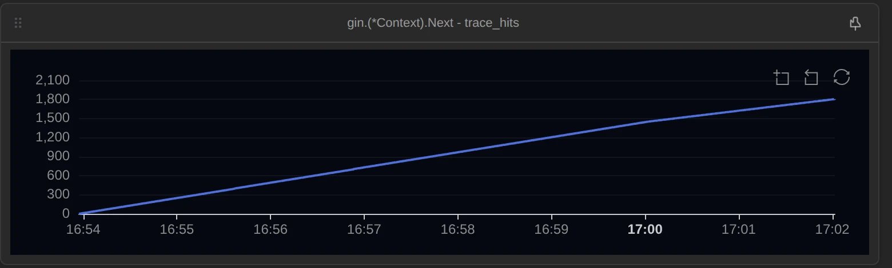
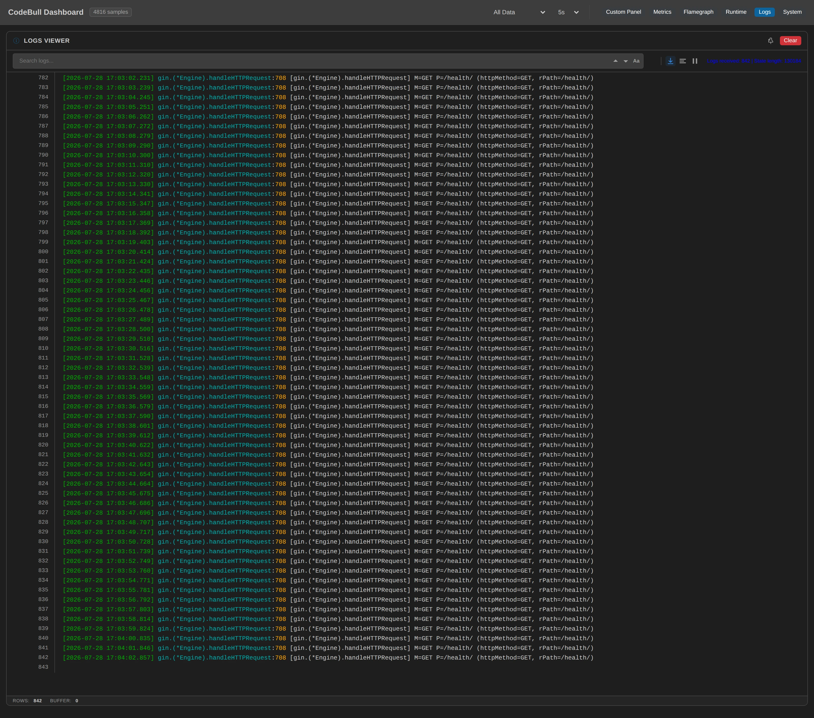
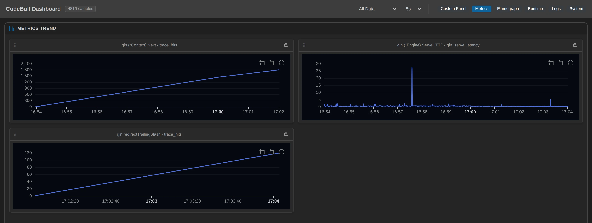

我想問的是一個很笨的問題——一個請求進來，我的中介層鏈到底被叫了幾次？ 但這次我沒有隨便餵流量進去。我讓同一條路徑 /health 產生五種不同的結局：正常、找不到路由、方法不對、沒帶 token、多打一個斜線。一種結局兩分鐘，一秒一個請求，中間什麼都不改。
十分鐘之後，那五個結局在面板上是這樣的：四次、四次、四次、三次，然後是零。最後那兩分鐘，服務照樣收了 120 個請求、照樣每一個都回了東西給客戶端，但我的中介層一層都沒跑，而服務自己的 access log 對這兩分鐘一個字都沒說。
這篇聊的不是工具，是「盯著執行中的框架數數」這件事本身——包括它怎麼在最後騙了我一次。
先決定要站在哪裡看
框架的黑盒性質跟 ORM 是同一種形狀，只是換了個位置。ORM 是「你寫的一行 Go」和「真正送出去的 SQL」中間隔了一層；框架則是「客戶端敲的那個請求」和「你的 handler 被呼叫」中間隔了一層。路由比對、路徑正規化、轉址、405 的判定、404 的 fallback——這些在原始碼裡讀得到，但跑起來的時候沒有任何東西告訴你它們各發生了幾次。
站在自己的 handler 裡最省事，但那是最沒用的位置：沒跑到 handler 的請求，正是我想看的那些。 往下站到 net/http 又太下面，那裡只剩一個入口，看不出 gin 內部把這個請求分岔到哪條路去了。所以我站進 gin 自己的路由層，挑了五個位置：
| 位置 | 種類 | 想回答的問題 |
|---|---|---|
gin.(*Engine).handleHTTPRequest gin.go:708 | log，M={httpMethod} P={rPath} | router 實際拿到的是哪個方法、哪條路徑 |
gin.(*Context).Next context.go:189 | metric | 中介層鏈被重入幾次 |
gin.serveError gin.go:765 | log，status={code} | 404 / 405 各發生幾次 |
gin.redirectTrailingSlash gin.go:782 | metric | 尾斜線轉址發生幾次 |
gin.(*Engine).ServeHTTP gin.go:667 → 674 | latency | 從拿 Context 到還回去，一個請求在框架裡花多久 |
Next 那個計數，等一下會變成整篇的主角。最後那個 latency，等一下會反過來咬我一口。
這裡有兩個踩過的坑值得先講。
第一個是掛 log 的時候要明確限定抓哪幾個變數——這是我上一輪掛同一個點時踩出來的。gin.go:708 那一行的作用域裡，後面才會被賦值的那些 local（i、root、allowed）此刻都還不是值，是還沒進入生存區間的堆疊記憶體；不限定就會把它們一起渲染出來，那一輪還為此重跑了好幾次。所以這次我從一開始就只抓 httpMethod 和 rPath。掛點的位置不只決定你看得到什麼，也決定你會不小心讀到什麼。
第二個是 latency。同樣是 ServeHTTP 的 667 → 674 這個區間，我兩天前掛過三種寫法，每一種都回報註冊成功、狀態顯示已插樁，但延遲表整個是空的、命中數恆為 0。這次我只多做了一件事：註冊時給它一個名字（gin_serve_latency）。同一行、同一個區間，樣本立刻出來，602 個，跟 router 那個點的 602 次一比一。
當下我的結論是「那個看起來選填的參數，其實決定了這個維度存不存在」。這個結論是錯的，我後來把它查清楚了，寫在這裡因為它比原本那個結論有用得多。
latency 點的命中數，數的不是「進入這個區間幾次」，是「這個區間關閉了幾次」。所以「命中數恆為 0」根本不是「沒被觸發」，是區間從頭到尾沒有關起來過。而它關不起來的原因跟名字無關：前一次註冊在被觀測的 process 裡留下了一組沒被釋放的 duration pair，而移除的時候它回報成功。於是同一個位置再也註冊不回去，我卻以為它已經乾淨了。我換寫法重掛的那一次，剛好走到一條沒撞上殘留的註冊路徑——是那個，不是那個名字。
留著這一段，是因為我當時的推論每一步看起來都成立：換了一個參數、數字出現了、所以是那個參數。一個對照組都沒有，只有一次前後對比。 這篇後半段還會再犯一次同樣形狀的錯，那次我有抓到。
被觀測的是一支很平凡的 gin：gin.New()、三層全域中介層（requestID → accessLog → auth）、四條路由、一個 NoRoute。
這次不亂餵流量：一條路徑，五種結局
上一輪我把各種請求混在同一個相位裡餵進去，結果是「數得出來次數，但分不出成本」——面板上那個延遲是一鍋粥。所以這次我把流量切成五段，每一段只有一種請求，而且盡量只換一個變數：
| 相位 | 我送的 | 結局 | 為什麼是它 |
|---|---|---|---|
| A | GET /health 帶 token | 200 | 基準線：打中路由、跑完整條鏈 |
| B | GET /nope 帶 token | 404 | 打不中任何路由 |
| C | PUT /health 帶 token | 405 | 路徑對、方法不對 |
| D | GET /health 不帶 token | 401 | auth 中途 abort |
| E | GET /health/ 帶 token | 301 | 只多一個斜線（而且我不跟隨轉址） |
每段兩分鐘、一秒一個請求、每段 120 個。窗口是 2026-07-28T08:53:57Z 到 09:04:03Z，十分零六秒。客戶端這邊自己數，總共 600 個請求；我中途另外手動打了 2 次 /health 確認服務還活著，所以面板上應該是 602——先記著這個數字。
素顏：一個請求在五種結局下的腳印
窗口結束時，面板上五個點的總數是：router 進入 602、Next() 1808、serveError 240、轉址 120、延遲樣本 602。
把它按相位攤開，就是這篇的骨架：
| 相位 | 客戶端請求 | router 進入 | Next() 命中 | 每請求 | serveError | 轉址 |
|---|---|---|---|---|---|---|
| A 200 | 120 | 121 | 484 | 4.00 | 0 | 0 |
| B 404 | 120 | 121 | 484 | 4.00 | 120 | 0 |
| C 405 | 120 | 120 | 480 | 4.00 | 120 | 0 |
| D 401 | 120 | 120 | 360 | 3.00 | 0 | 0 |
| E 301 | 120 | 120 | 0 | 0.00 | 0 | 120 |
（A 和 B 的 121 各含我那次手動健康檢查。）
四個相位除下來全是整數：484 ÷ 121 = 4.00、480 ÷ 120 = 4.00、360 ÷ 120 = 3.00。加起來 484 + 484 + 480 + 360 + 0 = 1808，跟面板總數一分不差。沒有任何請求走了我沒算到的路徑。
先講那個 4.00。一個打中路由的請求，c.Next() 被呼叫四次：引擎自己在 gin.go:722 呼叫第一次，然後我那三層中介層每一層裡的 c.Next() 各算一次。這是 gin 的鏈式設計——Next() 不是「執行下一個」，是「把剩下的鏈整條跑完，跑完再回到我這裡」，所以三層中介層等於 1 + 3 = 4 次重入。我知道 c.Next() 要自己呼叫，但我從來沒想過那個數字每一個請求都剛好是四。
再看 B 和 C 那兩行：404 和 405 也是 4.00，一次都沒少。gin.go:758 把 handler 換成 engine.allNoRoute 之後，serveError 在 gin.go:766 照樣把整條鏈跑完。打不中路由的請求，你的全域中介層一個都沒少跑——你掛在上面的 auth、限流、logging、metrics，404 和 405 全部照跑一遍。
D 那個 3.00 是 token 被我拿掉的那兩分鐘：auth 走 c.AbortWithStatusJSON(401) 然後 return，它沒有呼叫 c.Next()，整整一層的重入從計數裡消失。
到這裡都還算有趣但不驚訝。真正讓我坐直的是最後那一行。
那兩分鐘，鏈一次都沒有被叫到
E 相位我只改了一個字元：/health 變成 /health/。
gin 沒有這條路由，但它知道去掉斜線就有。所以它在 gin.go:728 呼叫 redirectTrailingSlash、把 req.URL.Path 就地改寫、回一個 301，然後在 gin.go:729 直接 return——那是 c.Next() 的上面。
面板上這兩分鐘長這樣：
handleHTTPRequest：120（router 每一個都收到了）redirectTrailingSlash：120（每一個都轉址了）gin_serve_latency：120（每一個都真的跑完了ServeHTTP）Next()：0serveError：0
120 個請求進來，120 個回應出去，我的中介層一次都沒有被叫到。
累積曲線上這件事不用解釋，它自己就攤在那裡：

而 router 那個點在同一段時間裡一秒一筆、一個都沒漏，逐字抄的內容是這樣：

M=GET P=/health/。左下角那個 ROWS: 842 也兜得起來：router 的 602 筆加上 serveError 的 240 筆，剛好 842。打開線上面板 →注意那個 rPath=/health/——它是客戶端敲進來的原樣，而 gin.go:790-792 會把 req.URL.Path 就地覆蓋掉。（這一輪那條鏈根本沒跑，所以「下游會讀到被改過的路徑」這件事我沒有量到，那是讀原始碼得到的；我量到的是：router 這一層看到的還是帶斜線的原樣。）想知道客戶端到底送了什麼，只能站在改寫的上游。
然後是延遲——這一段我差點寫錯
五個相位、同一個速率、同一支腳本，延遲應該可以直接比。面板上的中位數是這樣：
| 相位 | p50 | 相對 A |
|---|---|---|
| A 200 | 0.524 ms | 1.00 |
| B 404 | 0.613 ms | 1.17 |
| C 405 | 0.612 ms | 1.17 |
| D 401 | 0.463 ms | 0.88 |
| E 301 | 0.321 ms | 0.61 |
我當下的解讀是現成的：404 和 405 比正常請求貴 17%，因為它們要多掃一次其他方法的路由樹（gin.go:738-749 真的有這段）；401 便宜一點，因為少跑一層；301 最便宜，因為整條鏈都沒進。
故事很順，順到我差點就這樣寫下去。
但有件事對不上。我把每個相位「一個請求會額外觸發幾次探針」數了一下——扣掉延遲那個點本身（它兩輪都在），剩下的是：A 5 次（1 次 router log + 4 次 Next）、B 和 C 6 次（多一次 serveError 的 log）、D 4 次（Next 只有 3 次）、E 2 次（1 次 router log + 1 次轉址計數）。
這個排序，跟延遲的排序一模一樣。
也就是說，我根本分不出「404 比較貴」是 gin 的性質，還是我自己那顆探針的價錢。兩者在這個實驗裡完全共線。
所以我把觀測點全部拔掉，只留 latency 那一個，換一個乾淨的 process，用完全同一支腳本、同樣的 120 × 5、同樣一秒一個，再跑十分鐘：
| 相位 | 五個點時 p50 | 只留延遲點 p50 | 差 | 相對 A（乾淨） |
|---|---|---|---|---|
| A 200 | 0.524 ms | 0.119 ms | 0.405 | 1.00 |
| B 404 | 0.613 ms | 0.104 ms | 0.509 | 0.87 |
| C 405 | 0.612 ms | 0.065 ms | 0.547 | 0.55 |
| D 401 | 0.463 ms | 0.072 ms | 0.391 | 0.60 |
| E 301 | 0.321 ms | 0.020 ms | 0.301 | 0.17 |
排序整個翻掉了。
乾淨的 gin 裡，一個 404 比正常請求便宜 13%，一個 405 便宜 45%——跟我上面那段推論剛好相反。我看到的那個「17% 比較貴」，是我掛在 serveError 上的那個 log 點自己的重量。
405 那個 45% 我有把握解釋：gin.go:751 把 handler 換成 engine.allNoMethod，而我這支 demo 從來沒有註冊過 NoMethod，所以那條鏈跑完就結束了、後面沒有任何 handler，真正的回應是 serveError 寫出去的一行純文字 default405Body。相較之下 /health 要做一次 JSON 編碼。
至於 404 為什麼比 200 便宜 13%，我沒有可以驗證的答案。這支 demo 的 NoRoute 是我自己寫的、一樣回 c.JSON，所以「404 不用編碼 JSON」這個現成解釋不成立。0.104 對 0.119 這個差我量到了，但機制我沒量到，就不編一個給讀者。
順著這張表還看得到另一件事：觀測讓每個請求貴了 0.30 到 0.55 毫秒，佔了面板上那個數字的 77% 到 94%。E 相位最誇張——gin 自己只花 0.020 毫秒，面板上寫 0.321 毫秒，十六倍，因為那個請求本身太便宜了，探針的固定成本整個蓋過去。
那 E 相位剩下的、真的屬於 gin 的那個數字是：0.020 毫秒，一個正常請求的六分之一（0.119 ÷ 0.020 = 6.0）。而且它的分佈非常窄——p25 到 p90 是 0.013 到 0.054 毫秒，整段最大值 0.097 毫秒，連 0.1 都沒破。
一個被 gin 就地轉址掉的請求，成本是正常請求的六分之一，而且不會在你的任何一份 log 裡出現。
誠實話：這一輪我搞砸的、看不到的、和說不準的
我第一輪的延遲數字有 77% 到 94% 是我自己。 上面那段就是。我要強調的不是「所以延遲觀測沒用」——同一個工具的另一輪就把真相量出來了——而是：當你的觀測點掛在每個請求都會經過的路徑上，你量到的是「被觀測的系統」，不是「系統」。 相位之間如果剛好觸發不同數量的探針，那個差就會偽裝成你想要的結論。我如果沒有數過探針數、沒有再跑一輪，這篇會有一段寫得很順、但完全錯的因果。
中間有一輪蒐證被吃掉了。 第一次跑對照輪的時候，觀測端的 host 在第 2 分 13 秒無聲死掉：被觀測的 gin 完全沒事、流量腳本照跑完十分鐘、最後還印出一份漂亮完整的 tally，但面板那邊只留下第一個相位的 121 個樣本，後面四個相位共 480 個樣本全部沒了，log 檔一行錯誤都沒有。我是靠「樣本數對不上客戶端計數」才發現的。 上面那張對照表是重跑一次之後的結果。這件事的教訓很直接：窗口結束後不對帳，你不會知道自己手上是不是只有五分之一的資料。
對照輪有 3% 的雜質。 那一輪我掛了一個每 30 秒打一次 /health 的健康檢查（就是為了偵測上面那件事），所以每個相位混進大約 4 個「正常請求」，樣本數是 124 不是 120。它們在樣本裡跟其他請求長得一模一樣，我挑不出來，也就沒有挑。另外那一輪的面板上看得到三根孤兒尖峰，落在 A、B、C 三個相位裡（三段的最大值分別是 45.2、44.9、35.1 毫秒），把平均值拉到 0.36–0.48 毫秒——所以上面我只引用中位數與四分位數，不引用平均值。
Next() 這個計數看不出「少的是哪一層」。 它只告訴我鏈被重入了幾次。D 相位掉到 3.00，我知道少了一次，但「少的那次是 auth」是我從 4 − 3 = 1 加上程式碼推回去的，不是面板直接指認的。要面板自己講，得在每一層中介層身上各掛一個點。
相位邊界有大約一筆的歸屬誤差。 服務自己的 access log 只有秒級時間戳，所以交界處會有一兩行被算到隔壁相位（A 相位那 121 行裡有 1 行是 404）。總數是準的，但每個相位的邊緣是近似的。
這一輪全部跑在每秒一個請求上。 我沒有量過高負載，所以這篇沒有任何一句話是關於高吞吐的。那些比例在每秒幾千個請求下會不會變，我不知道，就不猜。
看得到就是看得到，看不到就標明看不到，不給讀者一個假裝完整的東西。
對照：服務自己的 access log 為什麼還不夠
這支服務身上本來就有一層 accessLog 中介層，印的是最典型的那種格式：方法、路徑、狀態碼、耗時。公平講，它一點都不瞎——同一個窗口它記了 481 行：404、405、401 各 120 行，200 有 121 行（含我中途手動打的健康檢查），每一格都對得上我客戶端自己數的。
問題是面板上 router 收到的是 602 個。
差 121。 其中 120 個就是 E 相位那些轉址（剩下 1 個是上面說的邊界誤差）。整份 access log 裡，301 出現 0 次、/health/ 出現 0 次——不是記得比較粗，是整整兩分鐘的結構性空白。
原因就是前面那張表：轉址路徑上 Next() 命中 0 次，而 accessLog 自己就是鏈上的一層，沒人呼叫它就不會跑，不跑就沒有那一行。同一份 log 反過來也印證了另一半：404 和 405 那兩個相位它一行都沒漏，各記了 120 行，正因為那條鏈真的跑完了。用它說了什麼，證明 404 跑滿整條鏈；用它沒說什麼，證明 301 一層都沒跑。
而且就算它有印出來，它印的那個耗時也不是你以為的那個耗時。把它自己的數字跟乾淨那一輪的 ServeHTTP 擺在一起：
| 相位 | access log 的中位數 | 框架實際花的（乾淨輪 p50） | 它看得到多少 |
|---|---|---|---|
| A 200 | 0.043 ms | 0.119 ms | 36% |
| C 405 | 0.0006 ms | 0.065 ms | 1% |
| E 301 | —（沒有這一行） | 0.020 ms | 0% |
那個 405 的 0.0006 毫秒（中位數，也就是六百奈秒上下；那一整段每一行都是幾百奈秒）特別有意思。accessLog 是在自己呼叫 c.Next() 前後計時的，而 405 那條路上，c.Next() 跑的是 engine.allNoMethod——這支 demo 從沒註冊過 NoMethod，所以那條鏈裡只有我的三層中介層、後面沒有任何 handler，真正寫出 405 回應的動作發生在 serveError 裡、c.Next() 回來之後（gin.go:766-778）。所以它量到的那一段裡幾乎什麼都沒發生：你的 log 說這個請求花了 0.0006 毫秒，而框架實際上花了 0.065——它看到的是百分之一。
所以觀測點多給了什麼？三件事：
- 它站在鏈的外面。 access log 只記得到「鏈有跑」的請求，router 那個點記的是「框架收到」的請求。這兩個數字的差，就是被框架在鏈啟動前處理掉的量。
- 它給的是逐字的、改寫前的內容。
M=GET P=/health/那 120 筆是req.URL.Path被覆蓋之前的原樣。 - 它會對帳。 602 對 481 這個差本身就是資訊。哪天這兩個數字的差開始變大，代表有一批請求正在框架層被攔掉，而你的 log 對此完全靜默。

收尾
我沒有改一行 code、沒有重啟服務、沒有先埋一套 trace backend。就只是在一個跑著的 process 上挑了五個位置掛觀測點，把同一條路徑餵出五種結局，認真數了十分鐘——然後因為數字看起來太順，又把觀測點拔掉重跑了一次。
換來的是：我看到一個請求會四次重入同一個函式、看到 404 和 405 把整條中介層鏈跑好跑滿一層不少、看到 auth 一 abort 就從 4.00 掉到 3.00 而且三個相位全部整除、看到有兩分鐘 120 個請求連鏈的門都沒進去而服務自己的 log 對它們一字未提、看到 router 那一層收到的還是客戶端敲的 /health/、看到那個被轉址掉的請求只花了正常請求的六分之一、也看到我自己的觀測點在面板上偽裝成了一個「404 比較貴 17%」的假結論。
框架是黑盒子，但黑盒子只是「預設看不見」，不是「不能看」。而看得見之後還有第二件事要做：確認你看到的是它，不是你自己。
附：這次的觀測設定（可重現）
- 觀測點（五個，全部在 gin 內部，未修改任何一行原始碼）：
gin.(*Engine).handleHTTPRequestgin.go:708— log，M={httpMethod} P={rPath}，必須限定variableNames只抓這兩個，否則會讀到該行尚未賦值的 localgin.(*Context).Nextcontext.go:189— metric（鏈重入計數）gin.serveErrorgin.go:765— log，status={code}gin.redirectTrailingSlashgin.go:782— metricgin.(*Engine).ServeHTTPgin.go:667 → 674— latency，模板別名gin_serve_latency。當初以為「不給別名就是 0 樣本」，那是錯的：latency 的命中數數的是關閉的區間，恆為 0 是因為前一次註冊留下的 duration pair 沒被釋放（移除還回報成功），跟別名無關。見內文
- 被觀測的服務：gin v1.12.0（vendored 到
./gin_pkg走 replace），gin.New()+ 三層全域中介層 + 四條路由 +NoRoute，:8080；HandleMethodNotAllowed顯式打開（gin 預設 false），RedirectTrailingSlash維持預設 true - 建置：
go build -gcflags="all=-dwarflocationlists=true -N -l"；SDKgithub.com/0xbu11/codebull v0.0.28 - 觀測窗口（五個點）：
2026-07-28T08:53:57Z→09:04:03Z（10 分 06 秒），五個相位各 120 個請求、一秒一個：- A
GET /health+token → 200：Next484（4.00） - B
GET /nope+token → 404：Next484（4.00）、serveError120 - C
PUT /health+token → 405：Next480（4.00）、serveError120 - D
GET /health無 token → 401：Next360（3.00） - E
GET /health/+token → 301（不跟隨）：Next0、轉址 120
- A
- 面板總數：router 602、
Next1808、serveError240、轉址 120、延遲樣本 602；Logs 分頁ROWS: 842= 602 + 240 - 驗算：
484 + 484 + 480 + 360 + 0 = 1808；602 + 240 = 842；602 = 600 個客戶端請求 + 2 次我手動的健康檢查 - 對照窗口（只留 latency 一個點，全新 process）：
10:27:29Z→10:37:35Z，同一支腳本、同樣 120 × 5。p50：A 0.119、B 0.104、C 0.065、D 0.072、E 0.020 毫秒 - 交叉核對：服務自身 access log 同窗口 481 行（
301與/health/各 0 筆），與面板 602 差 121 = 120 個轉址 + 1 個邊界誤差 - 這一輪沒做到的事：
- 五個點那一輪的延遲有 77–94% 是觀測本身的成本，所以任何跨相位的成本結論都以對照輪為準
- 第一次的對照輪被觀測端的無聲崩潰吃掉四個相位（只留 121 個樣本），整輪作廢重跑
- 對照輪每個相位混入約 4 個健康檢查請求（約 3%），無法從樣本中剔除
- 沒有在每層中介層各掛點，所以「少跑的那層是
auth」是推論而非面板指認 req.URL.Path被就地改寫、以及 405 走的allNoMethod裡沒有 handler，這兩件事是讀原始碼得到的（gin.go:790-792、gin.go:751），這一輪沒有在下游掛點把它們量出來- 404 比 200 便宜 13% 這個差量到了，但機制沒量到，全篇不給它解釋
- 全程一秒一個請求，全篇沒有任何高負載下的結論
📊 本文的遠端觀測面板（實測數據，可線上檢視）：gin-middleware-20260728
Metrics 分頁三格：Next 那條爬到 1808 並在 17:02 結束的累積線、gin_serve_latency 的散點、只有兩分鐘寬的 redirectTrailingSlash；Logs 分頁可以把 M=…P=… 與 status=… 逐字對帳，ROWS: 842 就是 602 + 240。對照輪另有一個面板：gin-middleware-control-20260728（只有一條延遲散點，而且圖被三根 45 毫秒的孤兒樣本壓扁了，結構在數字裡不在圖裡）。面板時間軸是本地時間 UTC+8，16:53–17:04 對應內文的 UTC 窗口。
這篇裡「不改 code、對執行中的 process 掛觀測點、然後盯著看」用的是 CodeBull —— 一個 VS Code extension，能對正在跑的 Go 服務動態插入 Metric / Log / Latency 觀測點，不改原始碼、不重編譯、不重啟。上面那條在最後兩分鐘直接消失的中介層曲線，還有那個把我自己的假結論拆掉的對照輪，都是這樣當場做出來的。
文中每一個次數、每一個毫秒數均出自 CodeBull 對執行中 gin 服務的實測證據，並可在上方面板連結線上對帳。